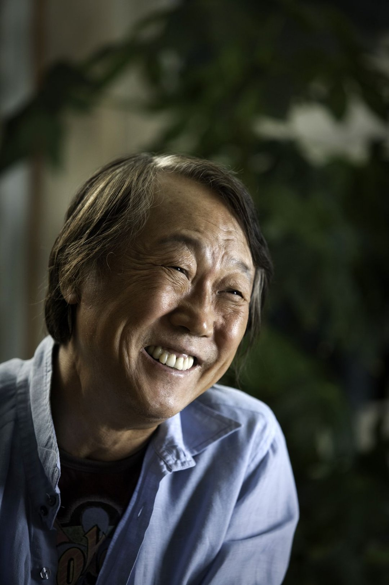

'왕과 비', '명성황후', '신돈'. 1990~2000년대 대하사극을 떠올리면 나오는 이 제목들은 한 작가의 손에서 나왔어요. 그런데 그 작가가 첫 사극을 쓴 건 쉰을 넘긴 뒤였어요. 지난 1일 향년 82세로 세상을 떠난 정하연 작가 이야기예요.
📷 사진 1 자리
▲ '왕과 비'·'명성황후'를 쓴 정하연 작가 · 사진=한국방송작가협회 제공
희곡에서 시작한 작가
정하연 작가는 1944년 황해도에서 태어났어요. 연세대 연극반인 연희극예술연구회에서 활동했고, 1968년 신춘문예에 희곡 '산울림'이 당선되면서 등단했죠. 출발점은 방송이 아니라 연극 무대였던 셈이에요.
1970년대에는 영화 시나리오를 많이 썼어요. 신성일이 연출한 '어느 사랑의 이야기'를 비롯해 '목마와 숙녀', '영광의 9회말'이 그의 각본이에요. 이후 KBS '전설의 고향', 'TV문학관' 같은 단막극으로 방송 일을 넓혔고, 희곡 '마로니에의 길'로 동아연극상 특별상과 백상예술대상 희곡상도 받았어요.
쉰 넘어 쓴 첫 사극
사극 작가 정하연의 시작은 1995년 '장녹수'예요. 1968년 등단하고 27년이 지난 뒤였고, 나이로는 쉰을 넘긴 때였어요. 이후 '조광조'(1996), '왕과 비'(1998~2000), '명성황후'(2001~2002), '신돈'(2005~2006), '인수대비'(2011~2012)까지 굵직한 사극이 이어졌어요.
모두 역사 속 인물과 궁중의 권력 다툼을 크게 펼친 작품들이에요. 정 작가는 '왕과 비'로 1999년 KBS 연기대상 작가상, 2000년 한국방송프로듀서상 작가상을 받았어요.
사극 밖에서 그린 욕망과 시대
현대극에서도 주제는 멀지 않았어요. '모래위의 욕망'(1992), '욕망의 바다'(1997), '욕망의 불꽃'(2010)은 제목부터 성공을 좇는 사람의 욕망과 파멸을 내세운 작품이에요. 사극에서 그린 것도 궁중의 권력과 욕망이었으니, 시대만 바꿔 같은 주제를 판 셈이죠.
결이 다른 작품도 있어요. '아내'(2003)와 '달콤한 인생'(2008)은 인물의 감정을 섬세하게 따라간 드라마로 꼽혀요. 2004~2005년에는 EBS 문화사 시리즈 '명동백작'과 '지금도 마로니에는'을 썼어요. 명동을 무대로 활동한 문화예술인들, 그리고 김지하·김승옥이 청년이던 1960년대 대학가를 다룬 작품이에요. 마지막 작품은 2018년 MBC '손 꼭 잡고, 지는 석양을 바라보자'예요.
✍️ 내 경험 자리 — 직접 보고·듣고 느낀 점 3~5문장으로 바꿔 주세요 (네이버 D.I.A.는 경험이 담긴 글을 우대하고, 경험 없는 글은 검색에서 밀릴 수 있어요)
정하연 작가는 희곡과 영화로 30년 가까이 쌓은 뒤 쉰을 넘겨 한국 대하사극의 한 시대를 쓴 사람이에요. 빈소는 서울 순천향대학교서울병원 장례식장에 마련됐고, 발인은 4일이에요.
